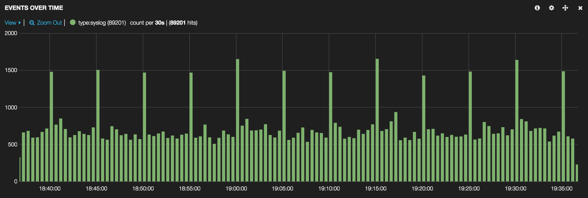

Using Puppet to Stand Up Centralized Logging and Metrics
Presented by Charles Dunbar
Who I am
Why Centralized Logging
- Easy to grep
- Able to delete local logs
- Save space
- Harder for attackers to hide tracks
- Compliance
Visualizing Logs
Easier to find patterns and trends
Tools Used
- Rsyslog + SSL
- Logstash, Elasticsearch, Kibana (ELK)
- Logstash-forwarder
- Puppet
Demo
Using Vagrant with Debian VMs
Find all the files at https://github.com/charlesdunbar/PuppetConf2014
Initial Setup